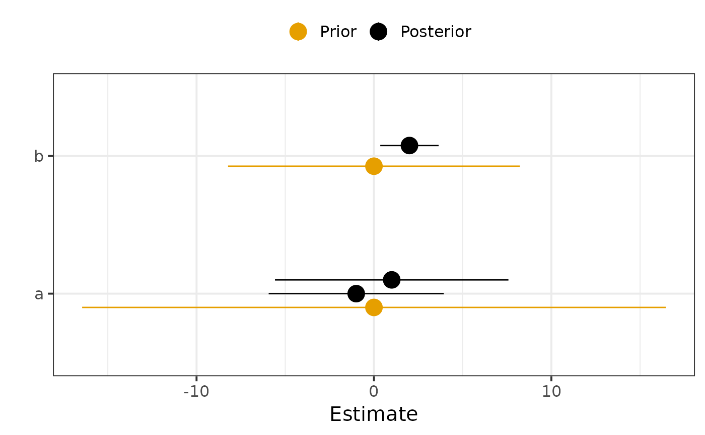

combine_prior_posteriorsubsets and binds the prior and posterior dataframes.plot_prior_posteriorplots posterior CI alongside prior CI.compute_prior_influencecomputes diagnostics of how the posterior is influenced by the prior.plot_prior_influenceplots diagnostics fromcompute_prior_influence.check_model_sensitivityis a deprecated alias ofplot_prior_influence.
Usage
combine_prior_posterior(prior, post, pars = NULL, match_exact = TRUE)
plot_prior_posterior(
prior,
post,
pars = NULL,
match_exact = TRUE,
lb = "5%",
ub = "95%"
)
compute_prior_influence(
prior,
post,
pars = NULL,
match_exact = TRUE,
remove_index_prior = TRUE
)
plot_prior_influence(prior, post, pars = NULL, match_exact = TRUE)
check_model_sensitivity(prior, post, pars = NULL)Arguments
- prior
Dataframe of prior parameter estimates. The dataframe is expected to have columns
Variable,Mean.Forplot_prior_posterior(), the columnslbandubshould also be present. Forcompute_prior_influence()andplot_prior_influence(), the columnsIndexandsdshould also be present.- post
Dataframe of posterior parameter estimates, with same columns as
prior.- pars
Vector of parameter names to plot. Defaults to all parameters presents in
postandprior.- match_exact
Logical indicating whether parameters should be matched exactly (e.g.
pdoes not matchp\[1\]).- lb
Name of the column in
priorandpostcorresponding to lower bound of error bar- ub
Name of the column in
priorandpostcorresponding to upper bound of error bar- remove_index_prior
Whether to remove the index variable for
priorexcept the first one. This is useful if a parameter with multiple index have the same prior distribution (e.g. with subject parameters, whenpriordoes not contain as many subjects as post for computational reasons).
Value
combine_prior_posteriorreturns a dataframe with the same columns as in prior and post and a columnDistribution.compute_prior_influencereturns a dataframe with columns:Variable,Index,PostShrinkage,DistPrior.plot_prior_posteriorandplot_prior_influencereturns a ggplot object.
Details
Posterior shrinkage (
PostShrinkage = 1 - Var(Post) / Var(Prior)), capturing how much the model is learning. Shrinkage near 0 indicates that the data provides little information beyond the prior. Shrinkage near 1 indicates that the data is much more informative than the prior.'Mahalanobis' distance between the mean posterior and the prior (
DistPrior), capturing whether the prior "includes" the posterior.
Note
For plot_prior_posterior, parameters with the same name but different indices are plotted together.
If their prior distribution is the same, it can be useful to only keep one index in prior.
If not, we can use match_exact = FALSE to plot parameter[1] and parameter[2] separately.
References
M. Betancourt, “Towards a Principled Bayesian Workflow”, 2018.
Examples
library(dplyr)
prior <- data.frame(
Variable = c("a", "b"),
Mean = c(0, 0),
sd = c(10, 5),
Index = c(NA, NA)
) %>%
mutate(
`5%` = qnorm(.05, mean = Mean, sd = sd),
`95%` = qnorm(.95, mean = Mean, sd = sd)
)
post <- data.frame(
Variable = c("a", "a", "b"),
Mean = c(-1, 1, 2),
sd = c(3, 4, 1),
Index = c(1, 2, NA)
) %>%
mutate(
`5%` = qnorm(.05, mean = Mean, sd = sd),
`95%` = qnorm(.95, mean = Mean, sd = sd)
)
plot_prior_posterior(prior, post)

plot_prior_influence(prior, post, pars = c("a", "b"))